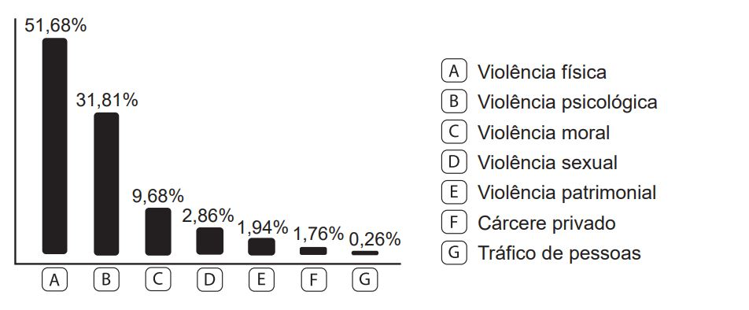
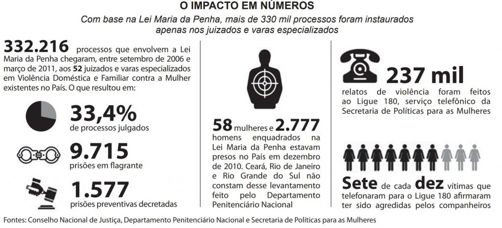

Com base na leitura dos textos motivadores seguintes e nos conhecimentos construídos
ao longo de sua formação, redija texto dissertativo-argumentativo em norma padrão da língua portuguesa
sobre o tema "A persistência da violência contra a mulher na sociedade brasileira", apresentando
proposta
de ação social que respeite os direitos humanos. Selecione, organize e relacione, de forma coerente e
coesa,
argumentos e fatos para defesa de seu ponto de vista. Não se esqueça: seu texto deve ter mais de 7
(sete) linhas e, no máximo, 30 (trinta) linhas.
TEXTO I:
Nos 30 anos decorridos entre 1980 e 2010 foram assassinadas no país acima de 92 mil mulheres, 43,7 mil
só na última década. O número de mortes nesse período passou de 1.353 para 4.465, que representa um
aumento de 230%, mais que triplicando o quantitativo de mulheres vítimas de assassinato no país.
WALSELFISZ, J. J. Mapa da Violência 2012. Atualização: Homicídio de mulheres no Brasil. Disponível em: www.mapadaviolencia.org.br. Acesso em: 8 jun. 2015.
TEXTO II:
TIPO DE VIOLÊNCIA RELATADA

BRASIL. Secretaria de Políticas para as Mulheres. Balanço 2014. Central de Atendimento à
Mulher: Disque 180. Brasília, 2015. Disponível em: www.spm.gov.br. Acesso em: 24 jun. 2015 (adaptado).
TEXTO III:
Disponível em: www.compromissoeatitude.org.br. Acesso em: 24 jun. 2015 (adaptado).
TEXTO IV:

Disponível em: www.istoe.com.br. Acesso em: 24 jun. 2015 (adaptado).